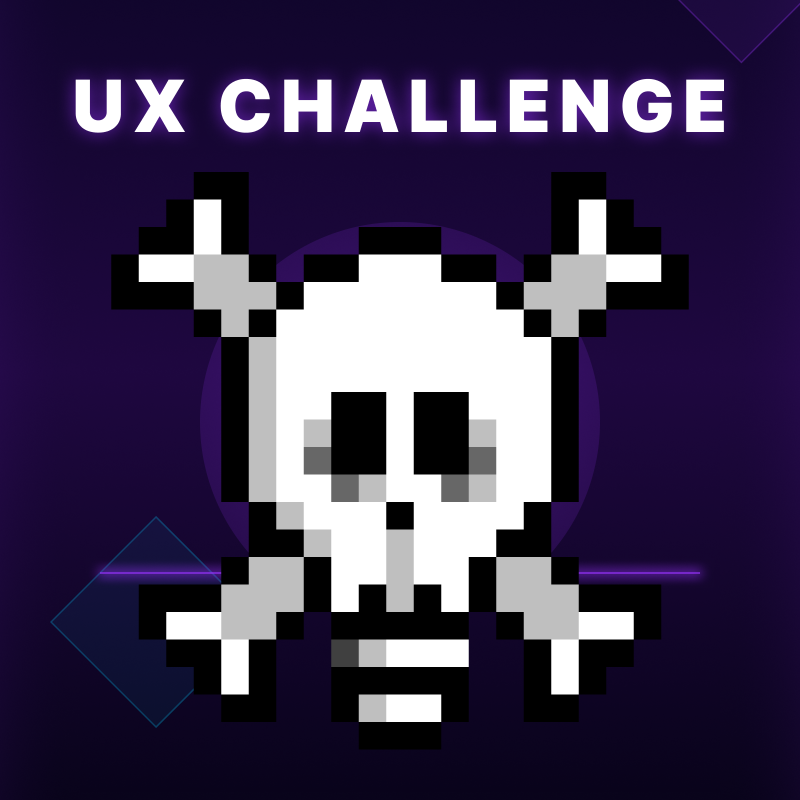

UX / UIUX Challenge
UX Challenge da Upixel para treinar UX/UI com desafios de entrevista e resolução de problemas.
Jogar agora
 Academia UPIXEL
Academia UPIXEL
O UX Challenge é um game interativo para quem quer treinar UX/UI na prática. Resolva desafios de interface, teste seus conhecimentos e prepare-se para entrevistas de UX Designer com situações inspiradas no mercado real.

UX / UIUX Challenge da Upixel para treinar UX/UI com desafios de entrevista e resolução de problemas.
Jogar agoraNão. Ele não ensina teoria do zero — serve pra testar se você já sabe aplicar o que estudou. Se heurísticas de Nielsen ainda soam estranho, estude isso antes de jogar.
Vale, principalmente pra treinar o raciocínio em voz alta. Entrevistador de UX não quer só a resposta certa, quer ver como você chega nela — e isso só treina analisando telas de verdade.
Não precisa. Quem já trabalha com produto costuma jogar mais rápido, porque reconhece o padrão do erro. Se você é iniciante e demorar mais, tá tudo certo — é justamente esse o treino.
É. Faz parte da Academia UPIXEL, sem custo e sem cadastro pra jogar.
Sim. Funciona